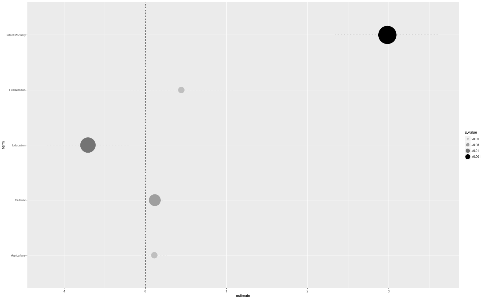
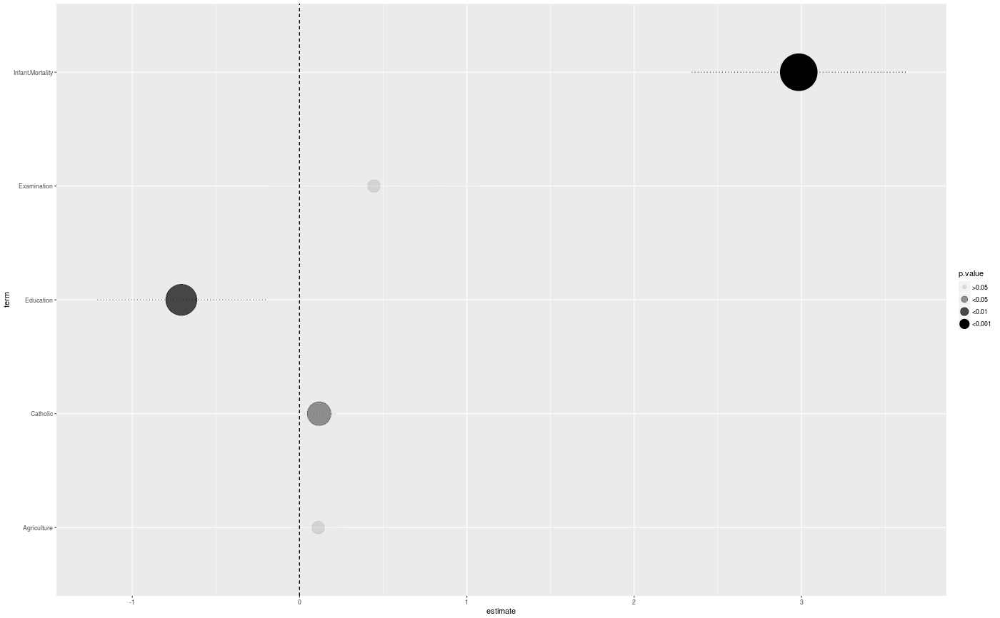
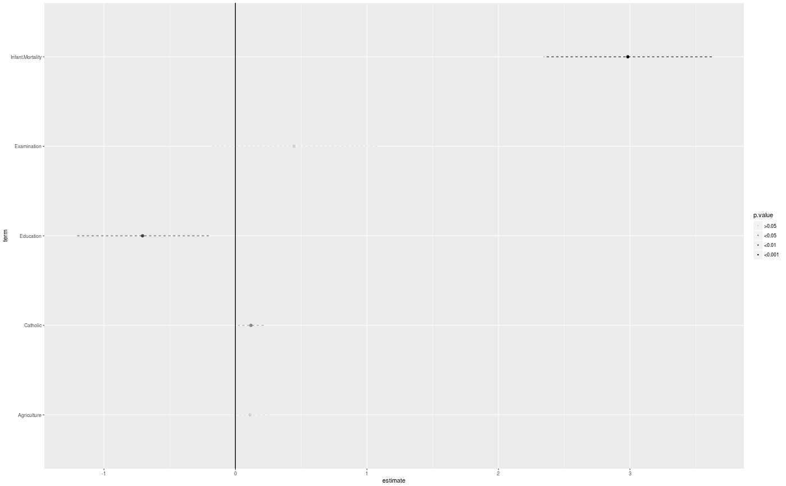
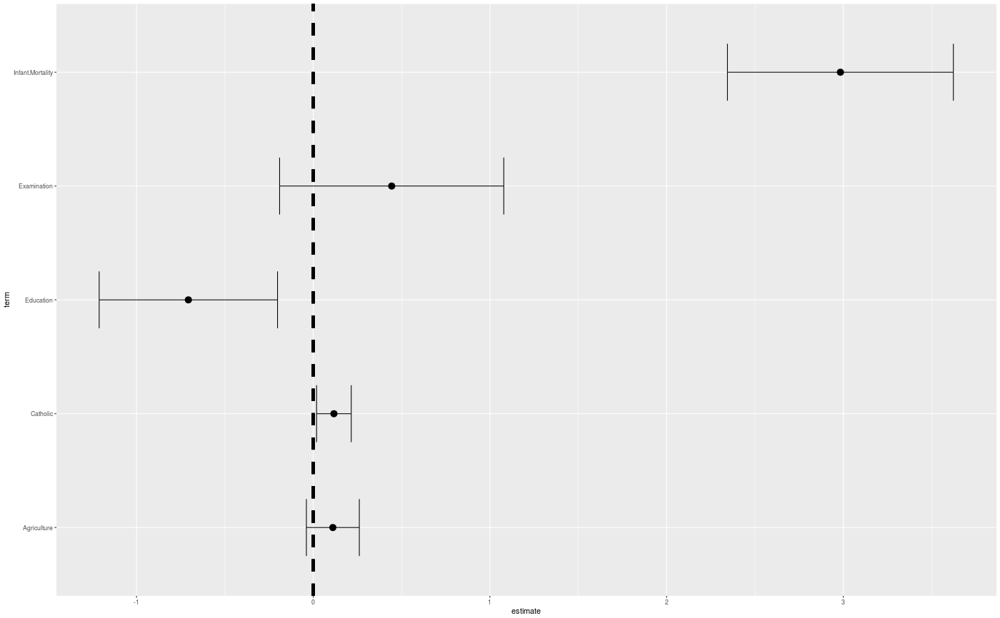
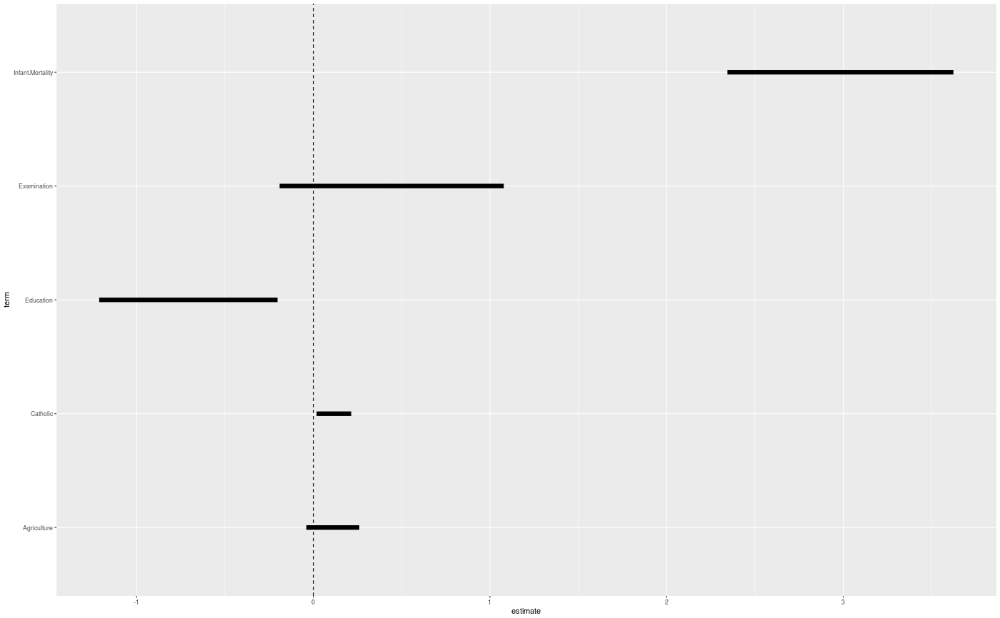
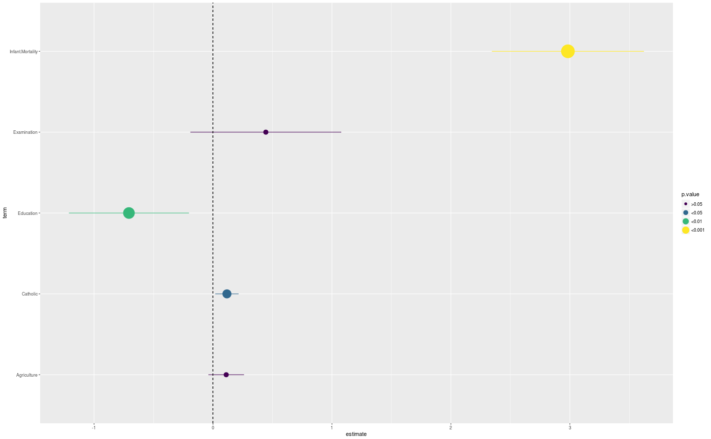
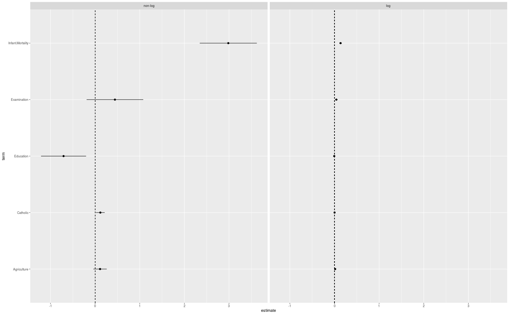

Horizontal point and line range with vertical center line.
Source:R/geom_estci.R
Useful to visualize results from regression type analyses, as it shows the estimate, confidence interval, and optionally use the value of the p.value to highlight significant associations. A vertical line is included
geom_estci(mapping = NULL, data = NULL, stat = "identity", position = "identity", ..., height = NA, fatten = 4, na.rm = FALSE, show.legend = NA, center.linetype = "dashed", center.linecolour = "black", center.linesize = 0.5, ci.linesize = 0.5, inherit.aes = TRUE)
Arguments
| mapping | Set of aesthetic mappings created by |
|---|---|
| data | The data to be displayed in this layer. There are three options: If A A |
| stat | The statistical transformation to use on the data for this layer, as a string. |
| position | Position adjustment, either as a string, or the result of a call to a position adjustment function. |
| ... | other arguments passed on to |
| height | Add ends to the confidence intervals. |
| fatten | A multiplicative factor used to increase the size of the
middle bar in |
| na.rm | If |
| show.legend | logical. Should this layer be included in the legends?
|
| center.linetype | The linetype for the center line. |
| center.linecolour | Line colour for the center line. |
| center.linesize | Line size for the center line. |
| ci.linesize | Line size for the confidence interval lines. |
| inherit.aes | If |
Value
Adds a ggplot2 geom layer.
Examples
library(ggplot2) library(broom) fit <- lm(Fertility ~ 0 + Catholic + Agriculture + Examination + Education + Infant.Mortality, data = swiss) fit <- tidy(fit, conf.int = TRUE) fit <- transform(fit, model = "non-log", p.value = discrete_pvalue(fit$p.value)) p <- ggplot(fit, aes(x = estimate, y = term, xmin = conf.low, xmax = conf.high)) p + geom_estci()p + geom_estci(aes(colour = p.value, size = p.value), linetype = "dotted") + scale_colour_grey(start = 0.75, end = 0)p + geom_estci(aes(alpha = p.value, xintercept = 1), colour = "blue", linetype = "dashed", center.linetype = "solid")p + geom_estci(center.linesize = 0.25, height = 1, fatten = 2)p + geom_estci(center.linesize = 2, height = 0.5, fatten = 8)p + geom_estci(ci.linesize = 3)fit_log <- lm(log(Fertility) ~ 0 + Catholic + Agriculture + Examination + Education + Infant.Mortality, data = swiss) fit_log <- tidy(fit_log, conf.int = TRUE) fit_log <- transform(fit_log, model = "log", p.value = discrete_pvalue(fit_log$p.value)) two_fits <- rbind(fit, fit_log) p <- ggplot(two_fits, aes(x = estimate, y = term, xmin = conf.low, xmax = conf.high)) # It might be possible to show groups with 'dodging', but it is currently in development. # p + geom_estci(aes(group = model, colour = model), position = position_dodge(width = 0.3)) p + geom_estci()p <- ggplot(two_fits, aes(x = estimate, y = term, xmin = conf.low, xmax = conf.high)) p + geom_estci() + facet_grid(~ model)